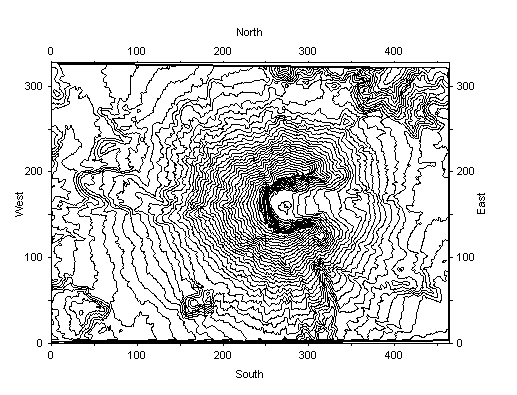
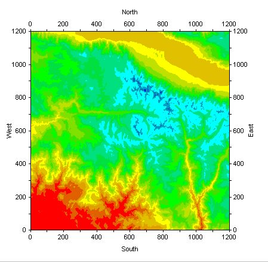
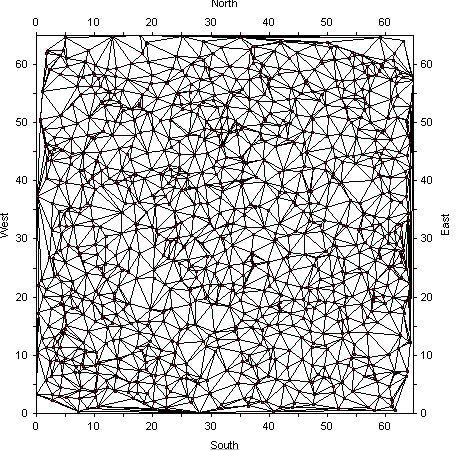
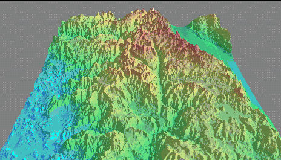

Contouring
Below is a sample gallery of maps generated using Geo-F/X's propietary contouring algorithms.
|  | A couple of examples of generating maps of stroked vectors using USGS data from Mt. St. Helens. |
|  | A simple example of generating a two-dimensional map and filling the closed contours with color. |
|  | A simple example of a TIN (triangular irregular networks) mesh generated from a set of X/Y points. |
|  | A three-demsional contour map of a part of the southern Sierra Nevada. |